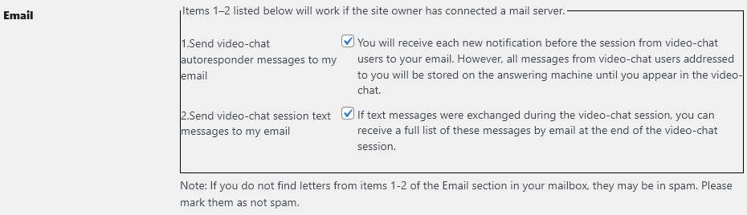

Anweisungen zur Verwendung des WP-WebRTC2 video-chat plugin
Plugin-GUI
Nachfolgend wird die Gesamtansicht des Video-Chat-Plugins in Form von 7 grafischen Bereichen dargestellt:

1. Plugin-Banner:

In der Mitte des Banners befindet sich ein Pentagramm mit Browsersymbolen, mit denen dieses Plugin funktioniert: Google Chrome, Fire Fox, Edge, Opera, Yandex.
2. Fenster aller registrierten Seitenbesucher:

Dies ist eine Liste aller registrierten Seitenbesucher.
Im Feld “Status” bedeutet die Farbe der Glühbirne:


3. Fenster zur Steuerung des Video-Chats:

den Gesprächspartner zum Videochat einladen
den Gesprächspartner vom Video-Chat ausschließen
Countdown-Timer
Video-Chat starten
Video-Chat beenden
Starten Sie die Aufzeichnung des Video-Chats
Beenden Sie die Aufzeichnung des Video-Chats
Notiz: nach Betätigung der Taste Start Beim Aufzeichnen eines Video-Chats erhält der eingeladene Gesprächspartner eine Nachricht, dass der Videoanruf von seinem Gesprächspartner aufgezeichnet wird.Während der Video-Chat-Aufzeichnung erfolgt Folgendes:
1. Zeichnet den Audio- und Video-Stream von zwei Video-Chat-Gesprächspartnern auf.
2. Zeichnet den Textnachrichten von zwei Video-Chat-Gesprächspartnern.
3. Zeichnet den Zeichnungsprozess auf dem Zeichenbrett von zwei Video-Chat-Gesprächspartnern auf.
4. Nachdem Sie die Stop-Taste gedrückt haben, werden Sie aufgefordert, das Ergebnis der Video-Chat-Aufzeichnung im -Format zu speichern .webm auf einem lokalen Laufwerk.
4. Fenster mit einer Liste von zwei Video-Chat-Teilnehmern:

In der ersten Zeile der Tabelle steht der Besitzer des Verhandlungsraums, der den Gesprächspartner einlädt. Wenn Sie auf seinen Namen klicken, werden Sie zu seinem Profil weitergeleitet. Über den Button Choose a file wird eine Datei ausgewählt und an den Gesprächspartner übermittelt. Wählen Sie eine Datei aus und klicken Sie auf die Schaltfläche Send. Während die Datei an den Gesprächspartner übertragen wird, erscheint ein Fortschrittsbalken. Feld Message – geben Sie dort eine Nachricht ein und klicken Sie auf die Schaltfläche Send.
5. Kombiniertes Fenster zur Anzeige aktueller Meldungen:

Taste "Chat" - Anzeigemodus Ar von Nachrichten des Anrufbeantworters, Teilnehmer des Video-Chats.

Taste "Clear" - Löschen Sie das ausgewählte Meldungsfeld.
Taste "Report" - speichert die Textnachrichten der Anrufbeantworter- und Videochat-Teilnehmer oder das Handshake-Protokoll in einer externen Datei im HTML-Format.

6,7 Zwei Fenster zur Anzeige von Video- und Audiostreams zweier Videochat-Teilnehmer:

Das erste Fenster des Videostreams ist der Eigentümer des Besprechungsraums. Wenn Sie auf seinen Namen klicken, gelangen Sie zu seinem Profil. Die Fensternummer befindet sich in der oberen linken Ecke jedes Videostream-Fensters. Durch Anklicken können Sie das Fenster mit der Anzeige des „Bild-in-Bild“-Modus vergrößern. Durch erneutes Drücken kehrt das Fenster in seine ursprüngliche Position zurück. Wenn Sie den Mauszeiger über die Fensternummer bewegen, erscheint ein Menü – Wechseln in den Computerbildschirm-Anzeigemodus oder umgekehrt – Einschalten der Webcam. Die Schnittstellensteuerung ist so konzipiert, dass Schaltflächen mit weißer Beschriftung nicht verfügbar sind. Die eingebettete Logik des Plugin-Verhaltens ändert die Farbe der Schaltflächenbeschriftungen in Grün oder Rot und ist gegebenenfalls verfügbar. Dadurch können Sie Notfallsituationen vermeiden, in denen das Plugin vom Benutzer falsch gesteuert wird. (Wichtiger Hinweis: Der Site-Administrator nimmt aus Sicherheitsgründen nicht am Video-Chat teil, um zu verhindern, dass sein Login allen anderen Site-Besuchern angezeigt wird.)
 Ein Videochat-Teilnehmer kann sein Fenster oder das Fenster des Gesprächspartners vergrößern, indem er auf den Kreis (1) oder (2) mit der Anzeige des Bild-in-Bild-Modus klickt. Durch erneutes Drücken kehrt das Fenster in seine ursprüngliche Position zurück.
Ein Videochat-Teilnehmer kann sein Fenster oder das Fenster des Gesprächspartners vergrößern, indem er auf den Kreis (1) oder (2) mit der Anzeige des Bild-in-Bild-Modus klickt. Durch erneutes Drücken kehrt das Fenster in seine ursprüngliche Position zurück.
 Wenn Sie den Mauszeiger über den Kreis (1) bewegen, erscheint ein Dropdown-Menü mit zwei Elementen: screen(oder- webcam) und board(oder- no board)
Wenn Sie den Mauszeiger über den Kreis (1) bewegen, erscheint ein Dropdown-Menü mit zwei Elementen: screen(oder- webcam) und board(oder- no board)
- screen/webcam - Schaltet den Bildschirm um, um Ihren Bildschirm freizugeben oder zu Ihrer Webcam zu wechseln.
- board/no doard - Schaltet den interaktiven Whiteboard-Modus zum Zeichnen ein oder aus.
8 Registriertes Benutzerprofil:

Punkt zum Benutzerprofil hinzugefügt - Users for Video chat. Bei einer großen Anzahl registrierter Benutzer der Website kann der Benutzer seine eigene Kontaktliste für Video-Chat erstellen.

Punkt zum Benutzerprofil hinzugefügt – E-Mail:
1. Senden Sie Video-Chat Anrufbeantworter E-Mail
2. Senden Sie Textnachrichten zur Video-Chat-Sitzung an meine E-Mail
So stellen Sie eine Videoverbindung her
1. Gehen Sie zur Site-Seite unter Ihrem Login, wo der Shortcode festgelegt ist [webrtc2]
2. Aktivieren Sie im Fenster der registrierten Besucher der Website das Kontrollkästchen des Benutzers, mit dem Sie eine Videoverbindung herstellen möchten, und klicken Sie auf die Schaltfläche => (Gesprächspartner zum Video-Chat einladen).
2.1 Wenn die Glühbirne des ausgewählten Benutzers blau ist, bedeutet dies, dass derzeit kein Benutzer vorhanden ist. In diesem Fall können Sie ihm nur eine Nachricht auf dem Anrufbeantworter hinterlassen, indem Sie eine Nachricht in das Feld eingeben message und Drücken der Taste Send.
2.2 Wenn das Licht des ausgewählten Benutzers gelb leuchtet, ist der Benutzer anwesend und erhält einen Klingelton. Um herauszufinden, wer anruft, kann dieser Benutzer den Mauszeiger über das grüne Licht im Fenster aller registrierten Seitenbesucher bewegen..
2.3 Wenn der von Ihnen angerufene Benutzer bereit ist, Ihren Anruf entgegenzunehmen, markiert er Ihr Login und drückt die Schaltfläche => (den Gesprächspartner zum Video-Chat einladen). Nach einigen Sekunden erhalten beide Teilnehmer des Videoanrufs ein Tonsignal Hello und die grüne Taste blinkt Start. Beide Teilnehmer des Videoanrufs drücken die Taste Start und der Vorgang zum Aufbau einer Videoverbindung beginnt. (~ 10 сек).
2.4 Wenn der von Ihnen angerufene Benutzer nicht damit einverstanden ist, Ihren Anruf entgegenzunehmen, erfolgt dies nach 60 Sekunden. Ihr Anruf wird automatisch abgewiesen.
3. Während des Videoanrufs können Sie:
3.1 Tauschen Sie Textnachrichten aus.
3.2 Senden Sie sich gegenseitig Dateien.
3.3 Teilen Sie Ihren Bildschirm miteinander.
3.4 Verwenden Sie ein interaktives Zeichenbrett.